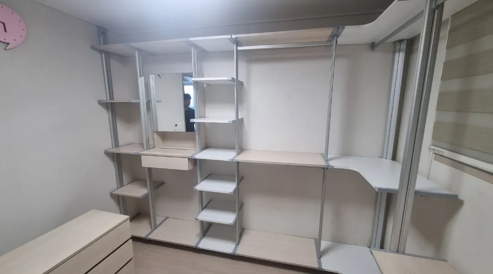

Reinstall
시스템행거
재설치 가격
재설치는 설치할 폭과 칸 수가 가격을 좌우합니다.
해체는 이미 해 두었고 새 공간에 설치만 필요하다면, 가격을 정하는 것은 주로 설치 규모입니다. 한쪽 벽에 일자로 세우는지, 코너를 돌아 ㄱ자·ㄷ자로 세우는지, 칸이 몇 개인지에 따라 작업량이 크게 달라집니다.
벽 전체를 쓰는 큰 구성이나 거울·화장대가 붙은 구성은 부속 결합 시간이 더해집니다. 코니처는 부품 사진과 새 공간 치수를 보고 규모에 맞는 가격을 안내합니다.

Situations
설치 형태별로 달라지는 점
일자형
한 벽에만 세워 코너 연결이 없어 비교적 간단합니다.
ㄱ자형
코너 선반과 연결 부품을 맞추는 과정이 더해집니다.
ㄷ자형·워크인
세 벽을 이어 수평을 맞춰야 해서 시간이 가장 깁니다.
벽 전체 대형
칸이 많고 부속이 붙는 경우가 많아 인원이 더 필요할 수 있습니다.
Checklist
재설치 가격을 가늠하는 기준
| 구분 | 특징 | 가격에 영향을 주는 부분 |
|---|---|---|
| 일자형 | 한 벽, 코너 없음 | 칸 수 |
| ㄱ자형 | 두 벽, 코너 1곳 | 코너 연결 |
| ㄷ자형 | 세 벽, 코너 2곳 | 코너 연결과 수평 맞춤 |
| 부속 | 서랍장·거울·화장대 | 결합 시간 |
| 부품 상태 | 분류 여부, 누락 여부 | 부품 확인 시간 |
Process
재설치 가격 안내 순서
부품 사진
폴·선반·부속을 한곳에 모아 찍어 보내주세요.
새 공간 치수
설치할 벽의 폭과 천장 높이를 받습니다.
설치 형태 정하기
일자·ㄱ자·ㄷ자 중 가능한 형태를 정합니다.
가격 안내
형태와 규모에 맞춰 가격을 안내합니다.
재설치·점검
설치 후 수평과 흔들림을 확인합니다.
FAQ
자주 묻는 질문
칸 수는 어떻게 세나요?
세로 폴과 폴 사이를 한 칸으로 보면 됩니다. 모르시면 사진만 보내주셔도 됩니다.
부품이 섞여 있어도 되나요?
가능합니다. 다만 분류하는 시간이 더해질 수 있어 부품 사진을 미리 보여주시면 좋습니다.
원래와 다른 형태로 설치해도 가격이 같나요?
배치를 새로 짜야 하면 시간이 더해질 수 있습니다. 가능한 형태별로 안내해 드립니다.
다른 곳에서 해체한 행거도 설치하나요?
네, 누가 해체했든 부품을 확인해 설치할 수 있습니다.
가지고 있는 거울도 같이 달 수 있나요?
행거에 결합하는 거울 부속이면 함께 설치합니다. 사진으로 먼저 확인해 드립니다.